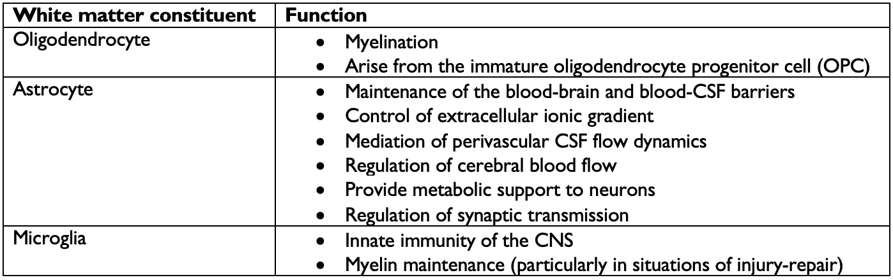
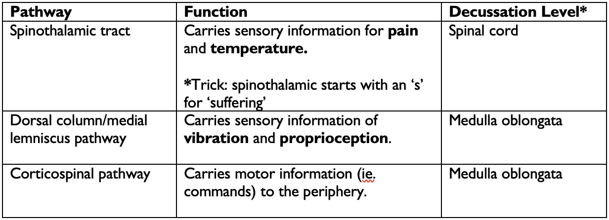

White matter refers to the axons and the glial cells forming the myelin sheaths around them. The primary function of white matter is to carry information from one part of the CNS to another. Often times, the myelinated axons will bundle together and form tracts, which are like information highways! White matter can connect the cortex with grey-matter nuclei deep in the brain or brainstem, with the cerebellum, with peripheral neurons projecting out of the spinal cord or even with other areas of the cortex (association fibers). Comprised of all manner of glial cells (microglia, astrocytes, oligodendrocytes, oligodendrocyte progenitor cells, etc.), white matter plays a crucial role in ensuring connectivity in the CNS. The primary function of white matter is to ensure the adequate insulation of axons in the CNS so that information, carried in the form of electrical impulses, can travel where it needs to as fast as possible. This function is mediated by myelin, which is produced by oligodendrocytes. Meanwhile, other glial cells play important roles not only in the regulation and maintenance of myelin, but also in the preservation of global brain homeostasis.
Myelin is mainly composed of lipids and water. Thus, any lesion involving white matter will reflect significantly in T1 and T2 signals.
From the cortex to the spinal cord
As you can imagine, a lot of information needs to be shuttled between the cortex and the spinal cord where signals are gathered from, and sent to, the whole of the human body. Starting from the cortex and moving down, the first major white matter structure we encounter is called the corona radiata . Spreading out to look like a fan or a sunburst, the corona radiata consists of axonal fibers jutting into and coming out of the cortex.

The corona radiata continues down and coalesces into the internal capsule . The internal capsule is shaped like an ‘X’ on axial, and contains sensory and motor, as well as afferent and efferent fibers travelling between the spinal cord and the cortex. As such, any damage to the internal capsule can have devastating consequences on both a person’s motor and sensory function.
The internal capsule is subdivided into different sections.
- The anterior limb: located anteriorly, this part of the internal capsule primarily carries fibers connecting with the frontal lobe.
- The genu: the inflexion point of the internal capsule, this part carries a lot of motor fibers (read more on the corticobulbar tract if you’re interested!)
- The posterior limb: located posteriorly, this part of the internal capsule carries motor fibers but is also responsible for carrying sensory information.

The fibers in the internal capsule continue down and enter the brainstem as the cerebral peduncles .
This structure is also densely populated by both sensory and motor as well as afferent and efferent fibers.
As the fibers from the cerebral peduncles enter into the brainstem, they subdivide into distinct tracts which are part of larger pathways extending from the spinal cord to the cortex. These pathways are made up of a relay of neurons which synapse on each other along at various points in the pathway.
The three most basic tracts are detailed in the following table.
*Decussation refers to the point where fibers from one side of the body “cross over” to the other side. Many tracts decussate on their way from the brain to the periphery or vice-versa, creating the phenomenon where many neurological functions are governed by the opposite hemisphere. The level of decussation refers to where, in the CNS, do the fibers cross over.
Each tract is located in a distinct region at each level of the brainstem, which you can learn about.
Other important tracts
The external capsule is a thin white matter tract found between the lentiform nuclei and the insular cortex. It mainly carries association fibers but also contains cholinergic fibers travelling to the cerebral cortex.
The optic radiations are white matter tracts that carry visual information from the lateral geniculate nuclei of the thalamus (nuclei processing incoming visual information from the optic nerves) to the primary visual cortex in the occipital lobe, where it will be processed. The optic radiations are impressive 3D structures spanning nearly the whole posterior half of the brain. Different areas of the optic radiations carries visual information from have different parts of our visual field.

Cerebellar peduncles
The cerebellar peduncles are 3 fiber bundles that connect the cerebellum to different parts of the brainstem.
- The superior peduncle connects the cerebellum with the midbrain and consists mainly of efferent fibers, that is axons transporting information from the cerebellum outwards.
- The middle peduncle connects the cerebellum and the pons and consists mainly of afferent fibers transporting information to the cerebellum from outside the CNS.
- The inferior peduncle connects the medulla oblongata and the cerebellum.